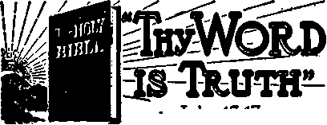
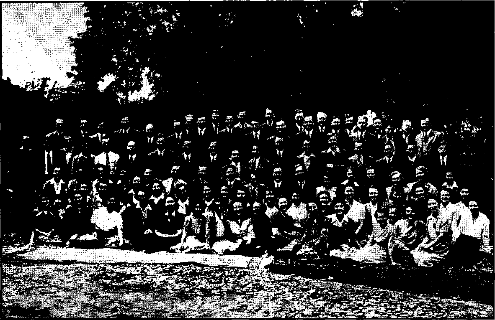

The "New Order” in Action
~A “New World Order” in Deviltry Shoving the "New Order” into France Ne York Versions of the Advent
■ Maginot Line Plowed Up
J Airplanes That Were Inactive ’ Germans Moved like Lightning When the Fighting Was Over World-wide Food Rationing “Sepulchres Whitewashed”
3
3
4
5 6
6
The Mystery Woman (Rev. 17) • , TO
W arid* Confusion the Result of Religious
“Thy Word Is Truth”
Watchtower Bible College Graduates First Class 19
America’s Next-Door Neighbor, Cuba
Says Common Council for American Unity
Presenting “This Gospel of the Kingdom”
Hierarchy Always Encourages Violence
President Secretary* Editor
J1.25
Published every other Wednesday by WATCHTOWER BIBLE AND TRACT SOCIETY, INC. 117 Adams St., Brooklyn, N. Y., U. S. A.
OFFICERS
N. H. Knorr W. 51. Van AmbUrgh Clayton J, Woodworth
Five Cents a Copy a year in the United States to Canada and ail other countries
NOTICE TO SUBSCRIBERS
Remittances: For your own safety, remit by postal or express money order. When coin or currency is lost in tho ordinary mails, there is no redress. Remittances from countries other than those named below may be made to the Brooklyn office, but only by international postal money order. Receipt of a new or renewal subscription will be acknowledged only when requested. Notice of Expiration is sent with the Journal one month before subscription expires. Please renew promptly to avoid Iojss of copies. Send change of address direct to us rather than to the post office. Your reQiiost should reach us at least two ■weeks before the date of issue with which it is to take effect. Send your old as well as the new address. Copies will not be forwarded by the poet office to your new address unless extra postage is provided by you.
Published also in Greek, Portuguese, Spanish, and Ukrainian. '
OFFICES FOR OTHER COUNTRIES
England 34 Craven Terrace, London, W. 2
Australia 7 Beresford Road, Strathfteld, N. S. W.
South Africa 623 Boston House, Cape Town
Mexico Calzada de Melchor Ocampo 71, Mexico, D. F. Brazil Caixa Postal 1319, Rio de Janeiro
Argentina Calle Honduras 5646-48, Buenos Aires
Entered us second’Class matter at Brooklyn, N. Y.» under the Act of March 3, 187&.
Notanda
The Heavens Declare God’s Glory
♦ Astronomers in various observatories have been watching a star since Septem-ber»which registered an explosion just about that time and then faded from its temporarily brilliant display to its accustomed faintness. The star was Nova
ygni, which can be seen only with the
VV^LUj VYllXl.'Jl kCiJl uu Mill J will! 1X10
larger telescopes. Incidentally, the show which it put on for a few weeks, and which the astronomers watched with interest, actually took place some three thousand years ago, for its light takes that long to reach the little corner of the universe where the earth spins on its axis. And so the heavens declare the glory of Jehovah.
Minerals Identified Electronically
♦ Now comes the report from Boston that a newly discovered electron-ray causes rocks to speak for themselves. This ray has already detected the presence of manganese, copper, tungsten, gold, arsenic and phosphorus in laboratory tests in the Massachusetts Institute of Technology, and it is confidently predicted that a new method of prospecting is at hand. Sample rocks are placed close to a machine so constructed that if there are any manganese or certain other valuable components in it the rock begins to emit electronic rays. Photographic and other processes follow and shortly the mineral is identified.
The Horsetail Grass Prospector
♦ Horsetail grass has the peculiar characteristic of taking into itself all the minute quantities of gold in its vicinity. Every ore body betrays its presence by minute quantities scattered in its vicinity. So the electrochemists discovered that by subjecting horsetail grass to examination they are now often able to locate gold deposits with remarkable accuracy. The same principle is now used in the locating of bodies of oil.
“And in His name shall the nations hope.”—Matthew 12:21, A.R.V.
Volume XXIV Brooklyn, N. Y% JA/ednesday, AuQuat 4, 1943 Number 923
The “New Order” in Action
THE New York Journal American, in_ never anything on the earth more units issue of September 21, 1942, had iHQy. Speaking of those halcyon days, as the headline of a news dispatch the the famous Roman Catholic historian,
words “ ‘New Order’ Old, Pope Declares”. Oddly enough, there is some truth in this, but not in the way that either the pope or the Journal American imagines to be the case.
The pope went on to say that the new order in the world is that spoken of in Virgil’s time “when the arrival of the Messiah was forecast”. This use of Virgil’s name deftly draws the mind in the direction of Rome, and with a little assistance and encouragement one can see the Messiah himself fleetingly, then Peter less fleetingly, and' at length “Peter’s successor”, the pope, the past and future ruler of the “Holy” Roman Empire. ,
The pope’s and Hitler’s “New Order” started just outside of the Garden of Eden, when Cain killed Abel; got under headway when Nimrod considered himself more important than Almighty God; speeded up when Alexander wept because he had licked the world and knew not what to do next; got well into its stride in the days of Caesar, when Christians were broiled at the stake; and came down the home stretch when the present pope made his concordat with Hitler, and the first act of the pair was the incarceration of Jehovah’s witnesses.
The popes, however, get their greatest satisfaction when they consider the days of what they call the “Holy” Roman Empire, when they were the absolute masters of “Christendom”, and concerning which times there certainly was
AUGUSTA, 1943
Lord Acton, said thoughtfully, and it is true now also, that:
The Papacy contrived murder and massacre on the largest and also on the most cruel and inhuman scale. They made the principle of assassination a law of the Christian “church” and a condition of salvation.
The idea that Pacelli’s and Hitler’s “New Order” is a good thing to be taught to the common people at this exciting moment found an immediate response in Japan. The words of the pope about his “New Order” being old had been out of his mouth only five days when the Japanese foreign minister, Masayuki Tani, in his first official address, praised the “dazzling victories” of Japan, Germany and Italy (not so dazzling recently), which, said he, contributed “to the swift progress of the new world order” of which the pope is elected to be the boss. He concluded with the statement:
When the three Powers concentrate their total power, there is no doubt that Britain and the United States will be annihilated, and the construction of a new world order will be successfully accomplished.
There is no doubt that the agreement between Hitler and the pope marked a “new order” in deviltry, even though at the moment it is showing signs of wear and tear. There is nothing in history like the way Hitler raced around Europe, with the pope’s “blessing” and encourage-
meat, and the way the Japanese galloped Great armies did not do it. Only 230,000 ” ” mechanized troops, plus corruption,
treachery, sloth, vanity.” The subheads
' all over the Far East
which includes, among other things, that jbarbarian. It fell by surprise, by treachery charming booklet End of Axis Powers; pGram within, by treachery from without. It Comfort All Uiat Mourn, J»#yas not beaten in battle. It died with the
Among the new weapons believed t&V bulk of its armies intact. It was not destroyed
have been formed is a German giant
New weapons were formed and new methods used, and it looked for a time as if these sons of the Devil were going to have their own way all over the planet. About the only comfort the common people were able to get was that contained in the Kingdom message, submarine, carrying 6,000 tons, which would explain how the Axis powers were able to send such large armies into Africa. The first direct knowledge, and possibly the only knowledge, of this huge boat is contained in a diary of Sergeant Mechanic Ball of the Twentieth Grennan Afrika Korps. The diary was found on a Libyan battlefield. Referring to the work of spies, Sergeant Ball wrote in German:
The same thing happened in Bardia harbor. As soon as the 6,000-ton supply-carrying U-boat came in, the Tommies bombarded the harbor.
If the Germans have U-boats as large as this one seems to be, what is to hinder their sending men or supplies , of any sort whatever to any point to which they wish to send them?
Now that France, the French people and the French Empire are in the crucible, it is a good time to consider some of the pertinent facts about how it was done. People on the ground would necessarily have a better grasp of the facts than others.
The London Sunday Express, June 30, 1940, contained almost a full page on this subject by George Sloeombe, the last British journalist to leave France. The caption was, “Here is the inside story of how France fell, and why. And as you read it remember it can happen here. were “Paralysis”; “Idle armies”; “Nazi audacity”; “Well equipped”; “Panic spreads”; "Teasanf spy”; and, “Worse to eome.” Some of the stirring sentences in the story are as follows:
France fell as Rome must have fallen to the by hunger. It fell with overflowing warehouses, with great stocks of war material. . . .
The corrupt were not many, but they were influential. . . . Faced by a great army of young men as desperate and fanatical as the Arab tribesmen of Mohammed, threatened with the new Nazi technique of mechanical and psychological warfare, the leaders of the French army clung blindly to their great classic traditions, to the proud examples of their military past. . . .
Above all, they believed in the impregnability of the Maginot Line and its more recent but still redoubtable prolongation northward to the sea. Well protected from air and artillery bombardment in their underground pastes de commandement, built to shelter divisional, corps, and even army headquarters in an emergency, they did not foresee a day when the general staff of an army, miles behind a supposedly intangible front line, would be trapped like rabbits in a hole by enemy tanks, motorcyclists and parachutists.
France was not defeated in battle. It was stricken with paralysis. It was overcome as by a great cataclysm of nature, and it fell gasping, open-mouthed, stupefied, a prey to unreasoning panic and terror. . . . The revenge taken by Germany for the defeat of 1918 was planned with mathematical precision. But it was only possible because France herself was mined from within, a ready victim to the audacious aggressor, a State already threatened with disruption and decadence. ...
France was conquered, not by six or eight million Germans, but by 100,000 or 200,000 motorized troops. A small mechanized column,
composed - of a couple of motorcyclists, two light tanks and a heavy tank, would advance several hundred miles behind the theoretical French front, destroying communications as they went, rounding up and disarming French troops, retaliating ruthlessly wherever they met with resistance, and halting for the assistance of their aerial escort when they met with serious artillery opposition. They did not stop to take prisoners, unless the captured Frenchmen were of high rank. They told, infantrymen to break the stocks of their rifles and go home. *■
There was an element of farce as well as tragedy in their advance through France. Civilian refugees, stranded in cars with empty petrol tanks on the crowded roads, were accosted by grinning Germans who offered to sell them French petrol at one sou the litre. Other Germans derisively showered looted cigarettes and chocolates on the fleeing streams of civilians. ;
Never has any country been more thoroughly permeated by spies and enemy agents. The highest quarters, like the humblest, were spy-ridden. The mistresses of eminent politicians were in German or Italian pay. German agents were everywhere. The failure to blow up the bridges on the Meuse was due to treachery. The stationmaster in one of the most vital railheads on the eastern front was found to have a secret telephone wire in his cellar, and to be in hourly communication with the enemy. .' . .
During the Battle of Flanders a British tank column stationed in a Belgian village noticed that it was bombed every night with a precision which bdtrayed intimate knowledge of its camouflaged positions, and after inquiry these bombings were found to follow the daily visit of an old peasant woman to a chicken coop in her farmyard. The farm was searched and a secret wireless transmitter was found in the chicken coop. The ‘‘old peasant woman” was in reality a German youth. ...
The secret of the long reconnaisance flights of solitary German machines over French territory during the first nine months of the war has now been discovered. These machines were actually sent out to pick up the feeble signals emitted by tiny wireless transmitters, AUGUST 4, 1943 small enough to be hidden in a cigar box. Such signals were detected in many large French towns, but their intensity was so low that exact location was difficult. . . .
I have heard young conscripts plead in self-defense, when bitterly reproached for cowardice, by the veterans of 1914-1918, that they were betrayed, sold to the enemy, led like sheep to the slaughter. "What could we do against tanks with a rifle?” they said over and over again. “The Germans were everywhere. We did not know friend from enemy. We could not trust even our own comrades.”
New York had its versions of why the advent of the 1940 “messiah” of the Devil’s “New Order”, Hitler, was so immediately and so stupendously successful. In the third of four reports on this subject by Colonel William J. Donovan, at that time special envoy attached to the navy department, Colonel Donovan said of Hitler:
He did not strike until he was in touch with certain important Frenchmen who were ready to treat with him. He needed but one swift blow. He terrified the soldiers by his noisemaking engines, he demoralized the officers by the surprise and power of his daring attacks, he bewildered the generals by the daring of his strategic conceptions. He troubled the entire population by his radio propaganda that insisted that France was being betrayed by Britain and by the French “warmongers”. He spread horrible rumors through villages, issued fearsome reports by wireless, and then, when the populations had congested the roads in their flight, machine-gunned them to heighten their panic.
A hesitant officer class brought about sheer defeat for the army; the army's defeat frightened the army leaders lest the soldiers seek scapegoats among the generals [as was afterwards done in the Riom trials]. And a majority of cynical and cowardly politicians rushed their country into one of the most contemptible surrenders on record. Just as Adolf Hitler had said they would.
The capable columnist Anne O’Hare
McCormick lays more of the blame upon the French people themselves. The way she put it (New York Times, June 24, .1940) was:
They were licked because they demanded of their political representatives only personal ■ benefits—a local bridge, a subsidy for wheat, i bigger pensions, paid vacations, the forty -hour week; they exerted pressure for social security but none for the sole basis of that security, the safety of France. They were licked because the politicians were afraid to tell them the truth. Hitler does not have to tell his subjects the truth, because he has power to act on the facts as he sees them without consulting anybody. But democratic governments are lost if for the sake of votes they withhold from the people the hard facts on which democratic judgments must be made.
Under the title “The Fifth Column in France”, published in this magazine in its issue of January 22, 1941, appear about a dozen other instances showing the way France was honeycombed with enemies of the French Republic. Two of the paragraphs were: '
An R.A.F. officer was forced down behind the German lines and hid in the loft of a bam when the Germans entered a French town near the border. As he watched, a German intelligence major walked up to a French civilian and patted him on the shoulder. “Well done,” he said.
Headquarters after headquarters were bombed. Troops moving silently and by night were machine-gunned. Columns of refugees suddenly appeared on military roads. They had been directed there by “French” officers from side roads allotted to them.—Manchester Guardian.
The Maginot Line, supposed to be the most elaborate fort ever constructed in the earth, has been plowed up and might as well have never been built. Five years were spent in its construction, and about $4,000,000,000. Pages on pages were written in description of the Maginot Line, its galleries, arteries, bombproof chambers, storehouses, elevators, steel doors, various floors, observation posts, ventilation systems, underground telephone lines, underground hangars, underground garages, and what was called, the “super army’' (in April, 1938) when it was discussed what would happen if the French army found it necessary to European peace for them to invade Germany. It sounds like a joke, but it isn’t. rChe Maginot Line even had its own hospitals and cemeteries. Also, there was supposed to be a secret underground chamber, known only to a few public officials, in which was a single button that could be pressed, if the Line were to be captured, and blow the whole 600 miles to smithereens. In its issue of November 26, 1939, the New York Times had a two-column article by Sir Philip Gibbs, British war correspondent, bearing the titles “French reveal 35-mile range guns as part of Maginot Line defenses; weapon awaits Nazi attack for its baptism; rabbits kept as guard against sudden gas raid; Poilus are confident.” Seven months later the Maginot Line was as though it had never been.
At the Riom trial of the last premiers of France, the fact was established that prior to the armistice there were many squadrons of aviators on the Riviera and at Bordeaux and in North Africa that were never called into action. A military writer made this statement:
One spectacle I shall never forget was the daredevil stunting done over Bordeaux on the day of the armistice by pilots who took up their brand-new planes, which had never been used in combat. The fliers worked off steam by skimming at top speed to within a few inches of rooftops or making sharp banks around flagpoles and tall chimneys. After the armistice a large number pf planes were flown to France from North Africa, where they had remained inactive throughout the blitzkrieg period.
As showing that there was manifestly a conspiracy on foot, this same writer, W(tverley Root, in his column “Backstage of the War”, published in the Fort Lauderdale (Fla.) Daily News, March 24, 1942, has this interesting and suggestive paragraph:
In one aviation unit, shortly after the war began, two officers from the intelligence service appeared, and without reporting to the officers or presenting any orders establishing’ their right to make an investigation, questioned private soldiers about the political opinions of their officers. A few days later, all officers except Rightists were ordered transferred to non-combatant assignments. Whether this was done throughout the air corps or not, this column cannot say. But if it happened in one case, it is very probable that it happened elsewhere.
In other words, the Jesuitical crowd, Pacelli, Petain, Laval and other traitors, were even then making preparations to see that France should lose the war and be reduced to present beggary and slavery, and so return to the papal fold.
That something was radically wrong with the army was shown at the Riom trial of Pierre Jacomet, of the French war ministry, when, referring to danger years of 1934 and 1935, he said that the army did not utilize to the full extent the credits that were placed at its disposal In the first of these years 30 percent were not used; in the second, 59 percent.
The Germans, in their 45-day offensive in the spring of 1940, went through France like a tidal wave, taking captive 1,800,000 prisoners and 130 of the 234 French generals. About 80,000 soldiers were killed, 120,000 were wounded and listed in the hospitals, and 20,000 were reported missing.
They did the same thing when they overran Vichy France, after the American armada landed in Northwest Africa.
The subways of Paris, which had been provided with airproof doors and air AUGUST 4,1M3
compressors, with the idea of having bombproof and gasproof shelters when the war began, were never needed. When the German troops marched into the city on June 15, 1940, they were unopposed. It was the ninth surrender of the city since 52 B.C., the last previous one having also been to the Germans on January 28, 1871.
They came in such a hurry, and the populace left in such a hurry, that an unknown physician advised four French nurses to kill eight patients they could not move. They complied, without even asking the doctor’s name. The lethal doses failed to finish one of the sick men, and the next morning he rose from his coffin, shrieking as he threw off his shroud. He died a few weeks later, but not until he had let the guilty nurses and the unknown doctor into unfavorable publicity they would have been glad to avoid. At the trial of the nurses, who were found guilty of murder, but were not punished, one medical witness declared interestingly and ominously:
The nurses were justified in taking the course they did. It was nothing more than the decision which doctors and nurses are obliged to take frequently in the hospitals.
There were fights in the Paris streets subsequently, and some shooting of German officers and men, with terrible reprisals therefor, but a French journalist who was in the city at the time, and who escaped to Britain, expressed the opinion that the shootings were not the work of Frenchmen at all, but of Germans who had been drinking heavily, and who wanted a fight, and got what they were looking for, from men of their own nationality.
When the Fighting Was Over
When the fighting was over, the dictators of Germany and Italy, Hitler and Mussolini, met at Munich, Germany, with a ruffle of drums, a clash of arms in salute, and a joyful clanging of “church” bells in the station square. The looting of France was the next thing in order.
The German soldiers had been living hard lives before Paris surrendered. But a great change in their status came im. mediately. Butter was such an unusual thing to them that the men bought it everywhere and ate it as they walked - along the streets, without bread, like * ice-cream cones.
Nothing like the systematic looting of France has ever before been done. The French people, by a new and peculiarly successful financial device, are being made to finance their own destruction. There has been no levy of reparations. A “better” way has been found. The French merely have to pay the “costs” of the army of occupation. The “costs” are figured on the basis of an army of occupation of 8,000,000 men, but only 3,000,000 have been quartered in France.
With the difference, i.e., the “costs” of maintaining 5,000,000 in France that are not there at all, the Germans are buying control of French factories from the French shareholders and most of these French factories now not only are working on German orders but are under German control.
The French property owners, who are parting with everything they owned, can find no outlet for the occupation francs but to buy government bonds, and, says the New York Times,
This in turn puts the government in funds again to continue its payments to Germany. So the cycle is complete: The Bank of France grinds out loans, the Vichy Government turns the money over to Germany. Germany buys up French property and securities, the former French owners use the funds to buy Government bonds and the Government turns the money over to Germany again. Thus the French are made to finance their own destruction.
The cleaning out of the Paris stores was done in the same efficient manner. A few months after the German occupation of the city, Mrs. von Ribbentrop, the wife of the German foreign minister, came to town and paid a visit to one of the highest-class stores on the, famous Rue de Rivoli. For two hours the doors were locked while the lady spent the money of the pope’s “New Order” on things she thought she and her friends would like to have. Among the things purchased were fifteen fur coats, with dresses, stockings, hats, and other things to match. All together the lady spent 500,000 ■ francs of “New Order” money in the two hours. This is the largest single sale in the history of the store.
The pope, you see, is quite right in his claim that the “New Order” is old. Just how old it really is will be clear to every Frenchman and every French woman and child by the time all the occupation francs have been cashed out of their savings.
World-wide Food Rationing
AMERICA is such a vast granary that it seems odd to find it included with Great Britain, Canada, Australia, New Zealand and South America in a plan of world-wide food rationing, but the fact came home quickly enough when the coffee rationing went into effect. For the moment the farming business in the United States seems to be in good shape. This is the usual situation in wartime.
For the United States as a whole there was an increase of 69.4 percent in cash 8
income from farm marketings in the first six months of 1942 over the same period in 1940. Delaware was at the top, with an increase of 197.1 percent, and Connecticut at the bottom, with only 17.3 percent, but all the states showed an increase. The topnotehers, in the order named, were Delaware, Arkansas, Texas, Arizona, Oklahoma, Kansas, Idaho, Missouri, Wisconsin, Alabama, Mississippi, Florida, and Indiana, all showing an increase of over 80 percent.
“Sepulchres Whitewashed”
THE title is suggested by the words of
Jesus denouncing the hypocrisy of the scribes and Pharisees, the religious preachers who persecuted Him. It was a practice among these ‘"better than thou” sects to make public and well* advertised demonstrations of virtue, while engaged in all manner of wickedness privately. The twenty-third chapter of Matthew records the most terrible scourging of hypocrisy ever delivered; and, among other things, Jesus said: “Alas for you, Scribes and Pharisees, hypocrites; because ye make yourselves like sepulchres whitewashed, which outside indeed appear beautiful, but within are full of dead men’s bones and all uncleanness.” (Matthew 23:27, Rotherham translation) Jehovah inspired His beloved Son to utter this cutting rebuke to the “holy cheats” of all time, and had it recorded in His Word for our particular admonition today. (1 Corinthians 10:11) It therefore follows that we may look for a manifestation of the same sort of deceit among the religionists of our time; and applying these words of Jesus to their deeds and utterances, it is observed that the modern clergy fit the description of the Pharisees with amazing accuracy.
Why not examine some of the clerical statements heard every day over the radio, and given prominence in the daily press? Such examination follows, together with an analysis of the confusion betrayed by the religious leaders; and, it is hoped, from this study some may be able to distinguish the features of the ancient Pharisees in modern dress. Particular consideration is given the sly practice, anciently rebuked by J esus, of hiding wickedness behind a “whitewashed” front of virtue, as the title suggests. God’s Word is the great Revealer; so let all men who desire enlightenment peruse the next few pages with care; for man’s steps are no true^ than the guide he follows. (Psalms AUGUST 4,1#43
119:105; 25:9) The false and true appear as distinctly as actors in the spotlight, when scrutinized by the illumination of God’s Word.—John 17:17.
The world prominence of Catholicism is brought to our attention by the press. None disputes the claim that it has the largest, number of members upon earth, perhaps more than 300,000,000. It goes without question that such power, directed upon the settlement of. the international conflict, could have incalculable results. Therefore many eyes are turned Rome-ward, and many hearts are lifted at the prospect of the peace said to be forthcoming through the pope’s efforts. It would be no less than amazing if the press dispatches reiterating the “unceasing prayers” for peace by the papal head of the greatest religious system did not carry hope to war-torn homes in every clime and country. It is natural that such pronouncements carry weight with the people.
No less true is the fact that many would reach for any hope that is offered in a world that seems devoid of hope. Desperate men are not prone to question ways and means with the same degree of caution exercised by those in less urgent need. The human mind shuns the contemplation of disaster, and fear frequently drives the people to shelter, any shelter. The defects, inadequacies, and lack of protection or shelter may often be learned with sad bitterness afterward.—Proverbs 14:12.
Besides those who seek the salvation and protection promised by the temporal rulgr of Catholicism, because of the dejection from the present outlook, others are impressed by her claims to divine power and authority. The Papacy thus receives further prominence and a revered position among the nations. Great political powers vie for her favor by sending rival emissaries. (Note how
America has relied on Spellman to offset the peace proposals of Mussolini’s Ciano, Associated Press dispatch February 20, . 1943.) The Roman Catholic Church, with its colossal membership and international influence, can be looked to, it is . thought, for outstanding results. Addi-' | tionally, one of the claimed titles of the pope is ‘Vicar of Christ”; and to many it therefore seems reasonable that the Lord himself would favor ‘so worthy a cause’, sponsored by so “majestic” a dignitary.
It becomes a vital matter, therefore, to evaluate the papal claims, in the light of God’s Word. This article -will not deal with the pope’s peace plans, which were considered so powerfully in the speech “Peace—Can It Last?" and now available in booklet form. It is limited to other claims, a comparison of words versus facts, newspaper prestige versus the uncensored record of action, with particular attention to the “Roman Church” in the role of “martyr to Nazi persecutions”.
The Mystery Woman (Revelation 17)
Mystery and confusion have always enveloped the movements and maneuvers of Rome. But faithful men are counseled by Jesus to “seek, and ye shall find”. (Matthew 7:7; Psalms 119:105, 130; 97:11) He declared also: “There is nothing covered that shall not be revealed; and hid, that shall not be known.” (Matthew 10: 26) The Bible is “sharper than any two-edged sword”, “piercing,” “and is a discerher of the thoughts and intents of the heart.” (Hebrews 4:12) When the deeds of men and institutions are dissected by means of the ‘piercing weapon of truth’ not even the mystery of Rome can escape detection. Furthermore, as the pope claims to be the “Vicar” or “Deputy” of Christ, Jesus’ words cannot be "dismissed as irrelevant. It must therefore be admitted that the only way to determine whether the pope speaks for Christ is by comparison of his words with truths from this only authoritative
10
Source of true knowledge .—John 17:17.
Inquiry is now focused on the position and sympathies of rulers of this religious system, whose present head is Pope Pius XII, residing at Vatican City, suburb of Rome, Italy. Queries on this point often include the following: Who possesses her favor and allegiance? To whom does she give her hand? Whose cause does she support? What enemies seek her downfall? Enlightenment on these questions is often sought, and seldom found.
Examination of statements by the Papacy, and the words of many authoritative spokesmen for the Roman Catholic Church, produces much confusion. The daily press gives these abundant space but attempts no explanation. What one priest avers, another denies; what a bishop favors, an archbishop denounces ; “Archbishop Beckman attacked Bishop Hurley for endorsing aid to Russia”; “Catholics constitute a bloc in the Axis spiritual forces” (said by Fari-naeei in praise of Cardinal O’Connell, St. Louis Post-Dispatch, August 7, 1941), is offset by “Priest rebukes statements aligning Church with Axis” (Ryan, in Herald Statesman, Yonkers, N. Y., February 12, 1941).
Deepening the apparent mystery are the following facts: Two German priests, “Father” Odo (Duke Charles Alexander Wurttemburg, a German army officer) and “Father” Paul (Bernard Strasser, whose Fascist activity is recorded by his own brother, Otto Strasser, in the antiSemitic book Hitler and I), were known to be recently living at St. Anselm’s Priory, 673 Tinton Ave., Bronx, N. Y. Friday magazine, March 14,1941, reporting on the two Nazi priests, says that “Father” Odo, whose secular title is Duke of Wurttemburg, states that the British Broadcasting Company “charged that Father Odo, formerly Duke of Wurttemburg, a German army officer, had been sent here as a ‘special peace emissary’ to persuade American Catholics that Fascism is fighting for Chris-
CONSOLATlON
tianity [Catholicism is the only ‘Christianity’ recognized by such]”; but, adds Friday, these priests “no more represent the Catholic Church than our'own American Fascist priest, Father Charles E. Coughlin, of Royal Oak, Michigan”. Again comes the manifesto of Catholic bishops pledging themselves to the war effort entitled “Crisis of Christianity" (November 1941). On the other hand, Jesuit priest John O’Brien, of Notre Dame, opposing America’s entrance into the war, says: “Our duty is crystal clear. Stay out . . . Why crucify the youth of America on the cross of hate and insanity? . . . Why plunge America into national suicide?” (New York Daily News, June 12, 1941)
Another shock to Catholics among the United Nations has been the position of the Vatican toward the Christ-hating Japanese. No one has ever contended that these treacherous animals were anything but pagans. Yet the pope embraces the emissary from Japan, recognized only since Pearl Harbor, bespeaking terms of endearment. It has also been reported in Australia—and this undoubtedly gave “Aussies” of the Catholic faith quite a turn—that the first to congratulate the Japanese conqueror of that strategic port was the Roman Catholic bishop of Singapore! (See Yearbook of Jehovah's . witnesses, 1943, “Australasia.”) Another little item depicting the love between the pope and Hirohito is carried by The Converted Catholic, February 1943, page 33:
The Pope sends $40,000.00 for the comfort of Japanese troops in recognition of our righteous mission. [United Press report from Chungking to New York Times, November 21, 1942] ■
The world is again baffled by another contradiction or anomaly: The Hierarchy vaunts her strength and pleads sympathy for her weakness. It is understandable when a dispatch from Vatican City, Italy, official headquarters of the Roman Catholic system, tells the world that the pope’s authority is greater than other rulers’ because he is supreme head of 400 million Catholics, who recognize him above all other loyalties. There is no confusion in these fairly well established facts. The perplexing mystery appears when one of the many accounts like the following is read: “This is what Fascism has meant to Catholics. . . . Youth regimented, priests humiliated, edifices closed and societies abolished. ... It happened in Italy. It happened in Germany.” (PM, May 1, 1941) For the incredulous and unbelievers the theme of Catholic persecution is decorated by many pictures in Look magazine and the Saturday Evening Post; and a book has been written anonymously, entitled “The Persecution of the Catholic Church in the Third Reich” (565 pages, illustrations, appendixes, index). (Longmans, Green, New York) Newsweek of April 8, 1941, remarks: “As long as the Nazis rule Germany the full story of their attacks on religion in general and Roman Catholicism in particular must remain unwritten.” First the world is told of the power of Roman Catholicism, and then, * in the same breath, that it is prostrate under the heel of Nazism.
But many will ask: The Bible show’s that Christians will always be persecuted in this world (Matthew 24:9); so is not this persecution of the Catholic Church a part of the affliction prophesied to fall on Christ’s follow’ers? In answer to such question it is freely admitted that the stories of outrages to Catholicism in Nazi Germany are cast to give precisely that impression: Catholic Christians, downtrodden by “godless Nazis”. In the role of martyr to the fuehrer's hatchetmen, the Roman Catholic Church has certainly gained popularity and sympathy in the United States. Those who are content to eulogize all religion take up the chant of praise, blinding themselves to a great deal of conflicting evidence.
Americans have, as a result, come to believe that there is a life-and-death
struggle going on between the Roman Catholic Church and the Nazi dictator. Suspicion of Rome, even in Protestant circles, has largely disappeared under • the barrage of testimony that Hitler is in reality crushing Popery, as well as all other forms of religion; and that hence * Catholicism is a fellow sufferer. Also in i the all-out war on Nazism it seems expedient to fan religious hatred against Germany in the minds of the religious of all creeds. The Roman Catholic Church is therefore officially abetted in one of the most outrageous deceptions of a history replete with intrigue. If, for the sake of argument, the theory of Roman Church persecution be accepted, how, then, are the following facts to be explained, that since the power of the Catholic Church is not denied, why then is not a little pressure exerted upon Hitler, since he is a Catholic himself? Why are not the forty million Catholics of Germany and Austria advised to renounce Nazism as the enemy of their faith? Stranger still, when the president of the United States asked the pope to • declare the war against Nazism a “just war”, why did the pontiff refuse with “a . polite, ‘No* ” ? Why were the Franco government of Spain and the Vichy government of France so carefully carved out to the pope’s publicly-declared approval by his “enemies”, Hitler and Mussolini! Why was Hitler’s war on Russia hallowed by Catholic Church bells,1 and pronounced a “crusade”, a “holy war”! Why were Catholic priests educated to follow in the wake of Hitler’s desolation of Russia! and why was he encouraged in this venture if not to destroy the rival of Roman Catholicism, the Greek Orthodox Church, whose chief strongholds were Greece and Russia?
Zn Fact, a pamphlet publication edited by George Seldes (author of the expose of Hierarchical aggressions in America,
1 Managing editor James of the New York Times stated in the issue of June 29, 1941, that “the Catholic Church bells rang in Germany when Hitler started Moscow-ward”. entitled “Catholic Crisis”), carried an article in its October 27, 1941, issue by Anna L, Strong, “who has spent many years in the Soviet Union and is recognized as one of the most competent authorities on the subject.” She said that the “whole pother about religious freedom [in Russia] covers the desire of the Vatican to take over the Orthodox Church, lock, stock and barrel”. Miss Strong must have hit the nail on the head, because it brought a howl from the Catholic-dominated Alberta Register (November 9, 1941). The Register itself made a neat summary of the truth about Russia, which is quoted: “[The Vatican] wants the Soviet law of property abrogated, and then it wants foreign priests, with foreign funds, to move in and take over the Orthodox properties.” She confesses that the Orthodox would welcome them. But, according to her, “the Soviets are asked to let a well-financed and hostile machine into their land, backed by world-wide pressures, and to give it propaganda rights in every village.” This clarifies one reason why the pope has so long howled against Communism.
Why are Catholic countries, such as Quebec, Irish Free State, Argentina, Spain, and Portugal, so cool or hostile to the cause of the Allied Nations? Surely the pope could muster a little support, which might, at least as represented on this hemisphere, back up the war on Nazism. Failing all this, since Hitler is a Catholic, why not ex-communicate him, as the pope did Queen Elizabeth of England when the Spanish Armada of Catholic King Philip II failed and met disaster as the punitive weapon of the Roman Catholic Church?
Look magazine of March 9, 1943, gives further report of the supposed “struggle” between Hitler and the Roman Catholic Church. As a sequel to two articles entitled “Hitler’s War Against the Catholics” this is entitled “The Catholics’ War Against Hitler”. Konrad Count von Preysing, bishop of Berlin, is represented as the chief enemy of
Hitler, “Indicting the Nazi regime, point by point, as a menace to Christian civilization.” Unintentionally the same writer exposes the very un-Christian methods of the Hierarchy in such statements as the following: “The Bishop of Berlin is an intelligent man of the world. [Compare James 4:4.] He was a diplomat before he was a priest, resigning the foreign service in 1905. His episcopate is politically the most important in all Germany.” “Von Preysing saw that, to destroy the Church, the Nazis would first have to muzzle her leaders. Though the 1933 Concordat [business agreement between Hitler and the Roman Catholic Church] specifically forbade it, the Gestapo began to interfere with exchange of church information. ... To meet this threat von Preysing organized his own underground communications. Now perfected, this secret service enables the Church to hold together and function despite the Gestapo.” Compare John 18:20 with Preysing’s methods: “Jesus answered him, I spake openly to the world; I even taught in the synagogues and in the temple, whither the Jews always resort; and in secret have I said nothing.”
It is more than likely that the fight between Hitler and von Preysing is “manufactured”; because all information from Germany passes through Nazi censorship. But even if true, it relates to one minute part of the vast organization which emanates from Vatican City. The concordat between Hitler and the pope still remains intact, while no such agreement has ever been made with the United States of America. The “conflict” between “church” and state might be compared to shadow boxing, intended for release only in America, and calculated to popularize Catholicism in this country.
It is well known that the Nazis have cruelly persecuted Jews, Masons, Jehovah’s witnesses, and all liberals, and the exception of the Catholic Church from such wholesale slaughter made explana-AUGUST4, 19+3 tion embarrassing, particularly since America has joined forces wuth the United Nations. To offset any criticism German Catholicism is nowT depicted as “a persecuted martyr”. Vaunting her strength the Hierarchy now pitifully bewails her weakness. Sympathy is asked for her pathetic struggle against the ruthless and overpowering dictator.
The answers to two questions, suggested above, have not emerged from consideration of the material furnished by the press, namely, Is the mighty persecuted! Is the Catholic Church powerless against Hitler?
Some understanding of the Roman Catholic Church system is required in order to properly consider her actual position in world affairs. This organization of vast proportions is in reality directed by a few men, known as the Hierarchy, of whom the pope is head. It is highly autocratic, and the will of a member is not tolerated to oppose the central authority. For instance, the appointment of priests does not come by recommendation of the people in any of the countries to which they are assigned. Specifically Catholic clergy in America are selected by a Hierarchy recognizing no master except the Roman pontiff (pope). For expediency these prelates are often moved about, particularly when involved in some scandal, but they are never chosen by popular vote, nor removed to suit the desires of the Catholic population.
The Hierarchy has had no difficulties with dictators. On the contrary, it is only with dictators that contracts or agreements, called concordats, are possible, because the terms of such agreements are of such nature as to render their publication hateful to the people. To this day the United States has never had a concordat with the Papacy, because public discussion in Congress required for ratification would arouse the people to great resentment. Consideration for
the people is the least concern of the greatest religious organization on the earth. Since the exploitation of the ■ people is also the chief business of totalitarians, common ground is easily found for. Papacy and Corporate State । (dictatorship) to engage in illicit friend* ship.
Such illicit relationship has been the practice for 1500 years. The Catholic organization is therefore not a “virgin prostrate under the Nazi heel”, but a “woman” of much “experience” with governments, and skilled in the diplomatic art of forging agreements to for-s ward her own interests. It is well known and admitted that the Hierarchy will make agreements with any government. Found in the Congressional Record, under “Extension of Remarks of Honorable James Murray, Senator of Montana, (Sept. 22, 1941)”, the statement of Professor Theodore Maynard, “one of America’s most erudite writers on Catholic themes,” confirms this fact: “Even under present conditions, the Holy See [pope] has several times attempted to arrange a concordat, a modus vivendi [literally, mode of living; hence a temporary arrangement, pending settlement of a dispute—JFebsier’s], with the Kremlin [Communist Russia] as it has made concordats with Hitlet and Mussolini and Franco. For the Church is always ready to make what terms it can with any government.” It is thus seen that the “virgin” has learned to find her way around even in a world full of dictators.
Professor Maynard makes clear also the absolute authority of the head of the Roman Catholic Church: “The policy of the Church is decided by one man, the Pope, though of course he works in consultation with his advisers. . . . Yet as a matter of practical necessity, his policy has to be accepted by loyal Catholics. Still more—and in this case as a matter of absolute necessity—the principles he lays down have to be accepted.” — Congressional Record, Appendix, 1941, A4605.
Nor can the power of this politicoreligious institution be denied. The same institution, which is said to be suffering untold woes under Hitler, continues to bulldoze the United States government, and also to frighten the British Lion. As regards America, when an attempt to withhold brass “needed for the casting of religious medals” from the Catholic Holy Society by 0PM the Society protested loudly and received its metal. Such government control was referred to insultingly in the Gaelic American (October 25,1941) as “New Deal Brass”.
Frequently, too, the Hierarchy threatens with the solid Catholic vote opponents that incur her animosity. Bishop Hurley, in his speech in St, Augustine, Florida, had the audacity to recommend that Roosevelt alone decide on America’s entrance into war. (July, 1941) Her hat is in every political ring, and the “loyal” are counseled regarding the “acceptable candidate”.
The British fear of the Catholic Church to date has safeguarded the capital city, Rome, of her Italian enemy. The inhabitants of that city have come to taunt the British with the expression, “The pope is our best air raid insurance.” Another fact bespeaks English fear of the Vatican: the silence and censorship for all exposure of the link between the pope, Hitler and Japan.
Censorship, boycott, mob violence, national invasion, tactics freely employed by the Hierarchy, are not the weapons of the persecuted. With these she has struck fear into the hearts of the strongest. The preaching of God’s Word, which is the only proper business of any representing Him, does not require the protection of Rome’s arsenal. “The weapons of our warfare are not carnal.” (2 Corinthians 10:4) Throughout the earth the message of God’s Word has been censored at the instance of the Catholic Hierarchy in order to protect her religious practices. The testimony of the 1943 Yearbook of Jehovah's witnesses discloses with terrible clarity that the punitive arm of the Vatican has struck heavily upon the righteous in almost every hamlet throughout the world.
‘Tty their fruits ye shall know them.” (Matthew 7:20) With the record, not the perjured evidence, before us, it is apparent that this organization is in reality the “utensil” of Satan. Why? Because she follows precisely the customs of the Pharisees, and therefore qualifies herself as a “female” offspring of the Devil. (John 8:44; Revelation 17: 5) Religion is Satan’s deceptive tool, lent the cunning he has acquired by six thousand years’ experience.
World Confusion the Result
of Religious Propaganda
Study of the Hierarchy thus reveals many changes of costume. Today she dons the garb of “persecuted” victim of Nazi atrocities. This dress is exhibited only in America, because in Europe she demands of her subjects full collaboration with the dictators. Failure to understand that religion is a snare keeps many deceived by her tricks. Some discount the extravagant claims of the Hierarchy, but few realize that the whole institution is nought but a mountain of lies.—Isaiah 28.
For those who wish to look, the Scriptures rip the cover off religion and disclose its villainous death-entrapment. The befuddled statements are intended to cause the confusion best adapted to hide dark deeds. In darkness Rome operates to best advantage.
Prayers and chanting have been used before to obscure the cries of the victims. While Franco, Mussolini and Hitler were hacking to death the Spanish Republic, with a merciless slaughter of Catholics on both sides, the Catholic Hierarchy in America kept up a continual chant of. praise for Franco’s fight against “godless Communism”. The din raised by Papal agents in the United States deafened most ear$ to the screams of a AUGUST 4, 1#43 sister republic in her death throes. Outwardly Rome’s champions “fought for a chivalrous cause”; but inwardly her armies were drunk on the blood of the sheep of her own Catholic fold. “Ye are . . . full of dead men’s bones and of all uncleanness.” (Matthew 23:27; Jeremiah 5: 26, 27) Comparing such conduct to that of a cruel shepherd Jehovah warns of coming disaster to Rome: “Woe be to the shepherds. . . . Ye eat the fat, and ye clothe you with the wool, ye kill them that are fed [on religious propaganda, not God’s Word].” “Howl, ye shepherds, and cry; and wallow yourselves in the ashes, ye principal of the flock [such as Franco, Mussolini, all Catholics, and “principal” men] : for the days of your slaughter and of your dispersions are accomplished; and ye shall fall like a vessel of desire.” (Jeremiah 25: 34, margin) Armageddon will abolish the chanting hypocrites.
Stories of Catholic persecution are but another device to obscure evil. If Americans can be made to believe that the Nazi dictator is crushing the Cathj olic Church in Germany, then the Vatican may continue to conspire with him for the Catholic subjugation of the world, without loss to American prestige. This propaganda scheme was well designed and has convinced practically everybody. On the other hand, men experienced in Vatican methods have learned to scrutinize papal utterances with a vifew to determining the purpose and motive, well knowing that regard for truthfulness will be the least consideration of unscrupulous Rome.
This unscrupulousness must be conceded. No other organization would advise its members to kill each other in the manner done by Roman priests in every land. Because of the large percentage of Catholics in the countries at war, of necessity more Catholics will be slain' than any other groups. Yet with this knowledge in advance, and merely for selfish gain, the Roman pope, who has concordats with every dictator, fo-
mented this present war, doubtless next to the greatest in destruction. The greatest will be Armageduox, in which the Papacy will no longer be a director of slaughter, but among the slaughtered. -—Psalm 145:20. _ _
Well do the Scriptures describe her tricks: “As a cage is full of birds, so are their houses full of deceit: therefore they are become great, and waxen rich.” —•Jeremiah 5: 27.
Jehovah “is not the author of confusion, but of peace”. (1 Corinthians 14: 33) The mastery of deception is not from Jehovah, the “God of truth”, but proceeds from His adversary. This article may not have proved to many that the Papacy is in league with all totalitarians, including Hirohito. It may have failed to convince that “persecutions” of the Catholic Church are phoney, and intended to ‘"whitewash” her partnership with Hitler, foreshadowed by the tricks of the Pharisees. Even those convinced may be swayed by “new evidence” that is bound to appear in the Hierarchy-ridden press, to bolster up the claim of Catholic sufferings in the Nazi realm. (Matthew 24: 24) Conceivable, it may be, that the “church” might even stage a few slayings of some in priestly costume to give color to the stories, except for the fact that American newspapers relieve the necessity by willingly publishing anything stated by the Hierarchy. So anxious to please Home are the newspapers generally that they will peddle any lie or swindle that has a Vatican label. “Approved by Rome” seems to be the password to editorial staffs to wink both eyes at the distortion of fact. Consequently, a few cries in the wilderness, such as Consolation, may not carry far.
But one fact should be crystal clear to all who read. The methods of the Hierarchy are as far from Jehovah’s ways as night is from day. This should be sufficient warning to men of good-will. Let such consideration turn men who can see no safety, in the ways of death, so abundant in all the world, to seek Jehovah’s kingdom, which brings life. “H appy is the man that findeth wisdom, and the man that getteth understanding. Length of days is in her right hand; and in her left hand riches and honour. Her ways are ways of pleasantness, and all her paths are peace.”—Proverbs 3:13,16,17.
The Gains in Population
THE largest gains in population from 1930 to 1940 were, in the order named, the District of Columbia, Florida, New Mexico, California, Nevada, Idaho, Arizona, Oregon, North Carolina, Louisiana, Delaware, Maryland, Tennessee, Washington, Wyoming, Virginia, Texas, and West Virginia. Each of these states gained 10 percent or more in the ten years. The only states that lost in population were Vermont, North Dakota, South Dakota, Kansas, Nebraska, and Oklahoma. '
The baby crop in the United States fell off sharply in the ten years ending 16
April 1, 1940. The gain of births over deaths was 8,634,835, bringing the population up to 131,409,881, and was the smallest, in proportion to the total, of any decade in American history. Kansas actually lost 81,862 of its population.
In the years between 1930 and 1940 the annual average number of babies born in the United States was 2,319,000, but in the year 1941 the number suddenly went up to 2,728,000; so the pop- ' ulation of the country7 at the end of the year was some 400,000 more than the statisticians had figured it would be. Cupid laughs at statistics.
consolation
—John 17:17
“Behold, the Man!”
WHEN God, by His mediator Moses, . gave the law to Israel at Mount Sinai He indicated by the promise of that law that the only means by which fallen man could be redeemed or ransomed would be by the giving of a perfect human life of equal value to the life which Adam had forfeited in Eden by his disobedience. That law required an eye for an eye, a tooth for a tooth, a foot for a foot, a life for a life; that is to say, a price exactly corresponding to that which had been lost. Thus the law pointed out that the great Ransomer would correspond exactly with the perfect man Adam, The apostle Paul assures us that this law was a ‘shadow of better things to come’.—^See Exodus 21: 23-25; Leviticus 24:17-21; Deuteronomy 19:21; Colossians 2:16,17; Hebrews 10:1,
Who in all the earth was able to bear this burden or meet the requirements of the divine law? All of Adam’s offspring have been born imperfect, and God could not accept an imperfect human creature as a ransom. “None of them [no creature on earth, no matter how rich] can by any means redeem his brother, nor give to God a ransom for him,” (Psalm 49: 7) For this reason, then, it seemed hopeless for man ever to expect-to be released from sin and death.
Thus is presented to the human race a condition of absolute helplessness, Mankind was wholly without power to release itself from the condition of death, and there never could be any hope of anyone of the human family enjoying life everlasting in a state of happiness unless God, in the exercise of His loving-kindness, should make some provision. He had promised to make such provision; His great purpose provided for such. It is first necessary, however, for us to see man’s absolute extremity in order that we may appreciate God’s opportunity for blessing humankind, and the great debt which we owe to Jehovah God and His Son for the provision made.
The apostle Paul, having in mind these things, wrote: ‘We were children in bondage under the elements of the world: but when the fulness of the time was come, God sent forth his Son, made of a woman, made under the law.’ (Galatians 4:3,4) How did God send His Son? Since a perfect man had sinned and the life of a perfect man must be given as a sin-offering, it is now important to see how the Son of God, whom He sent, was qualified to meet the requirements of the law and be the ransomer or redeemer.
It is easy to see that Jesus, when on earth, could not have been merely an incarnated spirit creature, because that would constitute a fraud, and God would not sanction anything wrong. The redeemer must be a man, perfect in every respect, equal and corresponding to the perfect man Adam while in Eden. It is also easy to see that Jesus could not be part God and part man, because that would be more than God’s law required; hence divine justice could not accept such a dual thing as a ransom. The divine law definitely shows that the ransomer must be exactly corresponding to the perfect human creature Adam. How, then, did Almighty God send His Son? And when sent, was He part man and part God?
The inspired Scriptures answer that prior to His coming to earth He was a spirit creature, God’s Word, or Logos; and that His life was transferred to the human realm and He was born a human creature. In heaven He was rich; and for our sakes He became poor. (2 Corinthians 8: 9) That is to say, He was rich in heavenly glory and power possessed by Him as the great active agent of
Jehovah in the creating of all other things, and He became poor by becoming a man. It was absolutely necessary for Him to be a perfect man on earth. Hence He must be born holy, harmless, separate from sinners and without defilement; and He met this requirement. —Hebrews 7: 26.
Furthermore, He met the requirements because He was made flesh and tabernacled or dwelt temporarily among men. (John 1:14) He partook of flesh and blood, became a human creature, and did so as a necessary step toward destroying him that has the power of death, that is, the Devil, and delivering obedient humankind. (Hebrews 2:14,15) He took upon himself the form of a servant or bondsman and was made in the likeness of men. (Philippians 2: 5-7) He was the only perfect man that has ever lived on earth, except Adam in Eden. He was not part human and part spirit, because He “was made a little lower than the angels for the suffering of death”. (Psalm 8: 4, 5; Hebrews 2: 9) Angels are spirit creatures, and thus creatures that are lower than angels are humans. Jesus on earth was human. Had He been part God and part man He would have been higher than angels instead of lower, as God is higher.
Being a perfect man, Jesus had the power to propagate a perfect race of people and with these populate the earth. In this respect, too, He exactly corresponded to the perfect man Adam in the condition he was in while in Eden. Jesus was humanly perfect in every respect, full of grace and truth. (John 1:14) When He finally stood before the Roman governor, Pontius Pilate, silent as a sheep is dumb before its shearers, and when the mob incited by the Jewish clergy of that time were demanding His lifeblood, Pilate tried to shame the Jews for such action and displayed Jesus and cried out to them: “Behold, the man!” (John 19:5, Diafflotf) The emphasis here is on the wmrd the. Pilate’s words may be paraphrased thus: ‘The man 18
whom you are asking me to put to death is not only the greatest man among you, but he is the man above all other men on earth.’ .
None of us has seen a perfect man. Jesus was the only one who has ever lived on earth qualified to become the redeemer of humankind. He "was sent to earth to prove Satan the Devil a liar by maintaining His integrity toward God under reproach and persecution and to become mankind’s ransomer.
Under the law that Jehovah God gave to the Jews a man must be thirty years of age before he reached his legal majority, that he might qualify as a priest, if descended from Israel’s first high priest, Aaron. Correspondingly, Jesus grew from boyhood to manhood’s estate, and when He was thirty years of age He presented himself to John the Baptist at Jordan river to be baptized. At the age of thirty, then, He was perfect in body, perfect in mind, perfect under the law, in every respect an absolutely perfect human creature, qualified to act as the sacrificing high priest foreshadowed by Aaron. Hence He was qualified to be the ransomer or redeemer of that which -mankind’s first father had forfeited, namely, the right to perfect human life on a perfect earth. By recapturing this lost right to life by the surrender of His own perfect human life, the man Jesus made available to all faithful and obedient ones of Adam’s offspring the right to everlasting life in human perfection. For this reason, when Almighty God raised His martyred Son from the dead, He raised Him to life divine in the spirit, that He might bestow upon human creatures the boon of life on parth under His glorious Kingdom. “For it is better, if the will of God should so will, that ye suffer for well-doing than for evil-doing. Because Christ also suffered for sins once, the righteous for the unrighteous, that he might bring us to God; being put to death in the flesh, but made alive in the spirit.”—1 Peter 3:47, IS, A. R. V.
CONSOLATION
Watchtower Bible College Graduates First Class
EARLY this year students assembled to take up a course of instruction that was unique both as to content and purpose. The students, and the college to which they came, were no less unique. They were a body of prdained ministers, already well instructed in the Scriptures, but eager to enlarge their field of usefulness in God’s service. The college was the newly opened Watchtower Bible College of Gilead, located on Kingdom Farm of 701 acres at South Lansing, New York. The complete story of the dedication of the college appears in an earlier issue of Consolation (No. 613), and it is not the purpose of this article to repeat what was there set forth.
From the very start the hundred students, men and women, manifested their earnest desire to ‘grow in knowledge5. The college day, Monday to Friday, began at 8 a.m. There were five periods of instruction of 40 minutes each, with 10-minute intermissions, which occupied the morning. Two additional periods of the same length in the afternoon completed the time devoted to lectures and classroom recitation. The remainder of the afternoon was devoted to manual activity such as working in laundry, kitchen, garden, and on the farm. This extracurricular work was a real benefit to the students, balancing the mental efforts of the preceding period and giving practical knowledge, experience and exercise. .
The college term was divided into two semesters of ten weeks each, each semester closing with examinations. The first examinations (April 10) reduced the student body to 94, as the Society maintains a high scholastic standard. A mere passing grade does not qualify a student to receive a diploma. Only those passing with merit so qualify. The closing examinations were held June 18. The students had studied diligently, some rising at four o’clock in the morning and others studying late at night. The entire AUGUST 4, 1943 class passed in their courses, and 84 with •merit sufficient to receive diplomas.
(Picture of the graduating class appears . on the next page.) .
The final examinations demonstrated that the students had acquired a vast amount of knowledge during the relatively brief period of instruction. During the five-month college term they had' absorbed information that is generally spread over a two-year curriculum. The course included a thorough study of the Bible and its leading doctrines, Bible speaking, a comprehensive study of Theocratic organization, a practical working knowledge of law and international relations, some necessary history, college English, practical Spanish, and arithmetic.
Applied missionary service, on which a grading was given, included the actual application in the field of the knowledge and training received in the college. The students averaged more than twenty-five hours of actual field service each month, effectively reaching territory within a radius of thirty miles of Gilead.
Graduation exercises were held June 23. N. H. Knorr, the college president, also president of the Watchtower Bible and Tract Society, served as chairman. Approximately 160 were in attendance on the occasion. The first speaker was the secretary-treasurer of the Society, W.' E. Van Amburgh, who, with characteristic simplicity, shared with the students some of the wisdom he has gained through more than half a century of labor in the work of the Lord. Next the Kingdom Farm servant spoke, followed by the instructors. Then the president addressed the students, after which the diplomas were distributed. While the address of the chairman was not the concluding feature of the graduation program, it was, doubtless its center and substance. Hence some extracts from it are here given. The whole of the address appears in The Watch-■ 19
Left to right: First row: Abbe;, k.x Burger. L, Simpkirut, M., Co&ns. E., Palmer, L-. Storr*. H.r Plumintr, E,, Gardner, D., Church. G., Hendrickson, S-. llllidring, M., Klein, D., Lupe*, N.,
Parker, A., Fellow, L, Clogston, J., Eisenhower, V,, Bowin, C. Second row: ffiUon, H., Mi) Dr, M-, Dtijron, A,, Anderson, R., CooL-h, F, Dreyer, R„ Xfchols, IT,, James, S., Miller,
Bourgeois, M.r Polsel, E.t Hardin, E., Akers, A,, Slebetdlst, H., Bungborg, L,, Oehllng, J-, Eisenhower, L Third row: Vun Doalen, E.. Tucker, M., Glass, D,. Bradshaw, M.. Brown, £,, Jhrig, E.f
Nelson, M., Tucker. Albert, tiiebenlist, T, Brown, H,h Wallace, W., Greaves, E., Aronson, D.t Htidbreder, H., Larimer, M,. Rtgnell, E., Garfeln, V. Fourth row: Leathoo, C,, Van Daakn, IL(
Buege, G., Fredianelll, G,, Goff, G., Franti, K., Eisenhower, C., OehUng, J,, Glass, R., Black, H,, Aguirre, K-, Cornelius, R , Perea, P,h Simpkins, W.h Van Daalen, L., Van Daalen, A.,
Fredlanelli, C., Mann, A. Fifth row: Hardin, F., Wright, J.( Garrett, F., Heyen, C., Parker, J., Van Daalen, D., Stanley, M.r Dixon, S., Dingman, W-, Akers. A., Plumhoff, EL, Van Daalen, K.r Powers, J., PndianeUl, B., Klein, T, Shrtk row: Palmer. C., Steelman, J.. Wallace, F.. Kjorlelo, D,, filone, R., Anderson, F., Tucker, Arthur, Hijldring, T.k Barger. M.
tower of July 15, and cannot prove other than a great blessing to all who desire to serve God with a good and honest heart. The president said, in part:
Creatures in God’s organization should be very anxious to do the things committed into their care properly, especially so the graduates of the Watchtower Bible College of Gilead. . . . Being faithful in our present position often brings greater privileges with greater responsibility. Such privileges and responsibilities should never be shunned or rejected. We should thank the Lord for them.
Regardless of any advancement or not, we do our work because it is the Lord’s will and is right. We know that we have the truth. We know that we are working with God’s organization. We know that Satan’s devilish organization is to go down and be cleared out, and that for a certainty God’s kingdom in all its, power and glory will bring unspeakable blessings to this earth. . . .
So, then, the work that you Bible college graduates do in going from door to door or on the street corners proclaiming the Kingdom message, and conducting book studies and model Bible studies; your work of going into small towns where witnesses have never gone before; or your planning to go to other countries where the message has never been given; all of this is a vital work preliminary to the establishment of the New World of righteousness. . . .
The God whom we serve is not unmindful of the work and labor of love that you have performed both here and out in the field in times past. But he does admonish us through his apostle, at Hebrews chapter six, that while he is not unmindful of the past good accomplishments of his servants in the interest of the Kingdom, still they must continue on in their activity to the very end, and not slack the hand or be slothful. It is only through faith and patience (or endurance) that we shall realize the promises set forth in his Word concerning us. . . .
When the Society selected you from among the Lord’s ordained ministers, full-time workers in the field of Kingdom activity, inviting you to come here as students, it was because the Lord was not unmindful of your labor of love and the works that you have shown toward your brethren, aiid how you had ministered to the sanctified ones and the people of good-will. And, now that you have finished a strenuous course of study in the Watchtower Bible College, it is the Society’s desire that every one of you show the same diligence in the future,'to the full assurance of hope unto the end. . . .
You are free men and women. You have been freed from the bondage of this world because of your love of Christ and your following in his footsteps. No longer do you come under the oppressive fear of religion; but, because of your study of God’s Word and making a consecration and covenant to do his will, you have become free creatures. Bear well in mind, then, what James further says: “But whoso looketh into the perfect law of liberty, and eontinueth therein, he being not a forgetful hearer, but a doer of the work, this man shall be blessed in his deed.” ... It is my prayer that every one of you may continue faithful and steadfast and true to the covenant which you have made with God, and. that great and many may be your privileges in the future, throughout the generations to come under the divine mandate.
To those students who have completed the course at the Watchtower Bible College of Gilead with a meritorious passing grade as set up by the Society a diploma will be given. . . . The diploma reads-.
"Hereby be it known that [the student], an ordained minister of the gospel, has completed the full course of study and training of this college, with merit. He is therefore graduated as specially qualified to engage in educational work, promoting good-will and working in behalf of permanent peace and the law of perfect order and righteousness, among all peoples. He is specifically recommended for service as a representative of the founders of this college, the Watchtower Bible and Tract Society, to colabor with them in preaching the gospel of Jehovah God’s kingdom by Christ Jesus.” Everyone going, forth from this consecrated college will, I feel sure, upon receiving his
assignment from the Society, move ahead in the greatest educational campaign ever begun on this earth, namely, the education of the people of good-will in the Word of God; and ' that henceforth you will always be a promoter of good-will toward Jehovah God and his . Theocratic Government; and that you will 1 work in behalf of the Kingdom’s permanent peace and its law of perfect order and righteousness “among all peoples”. Enduring peace, perfect order and righteousness can be accomplished only by the unobstructed operation of God’s kingdom upon the earth. And it is the good pleasure of the ambassadors of this Kingdom to promote these things now amidst a distressed world. God’s people are the only ones at peace, and who are at liberty to perform this great work in the earth. Those who receive the diploma which the Society is pleased io bestow as a recommendation for service as its special representatives will, by God’s grace, continue on preaching the gospel of Jehovah God’s kingdom by Christ Jesus.
A “Call to Action”
ON APRIL 17 and 18 of this year, Jehovah’s witnesses in many lands held a “Call to Action” assembly. It cannot be said that they had been inactive, for with Jehovah’s witnesses faith means works. One of their publications, commenting on the importance of activity, says, “Faith without works is dead, and works without faith are likewise of no value.” This but echoes the words of James 2:17,20,26. So, Jehovah’s witnesses had been active. Still, as the apostle Peter expresses the matter, it is well to have one’s mind stirred up from time to'time, particularly when persecution and prosecution are brought to bear against the servants of the Lord. These had been the experiences of Jehovah’s witnesses in large measure. And so the Lord arrange^ to refresh and encourage them, by a “Call to Action” in the form of a getting together in conformity with the Word. ‘Forsake not the assembling of yourselves together, as the manner of some is; but exhorting one another: and so much the more as ye see the day approaching.’ (Hebrews 10: 25) It was appropriate, too, that this call should be made in the spring of the year, its true beginning, at which time both the passover and the redemption are commemorated.
April 19 (after 6 p.m.) was the time of the memorial of the Lord’s death, corresponding to the 14th of Nisan, the 22
first month of the Biblical year, marking the fullness of the new moon nearest the spring equinox. The date came on a Monday, which permitted the use of the preceding Saturday and Sunday as a sort of preliminary “feast unto the Lord” in the consideration of His faithfulness in the provision of the needs of His people. Not that Jehovah’s -witnesses are observers of days and months, no, not even of the sabbath day, given to Israel, as if they were under the law. The annual commemoration of the One Sacrifice, in remembrance of Him, and their part with Him, is a privilege rather than a duty. It was a fit season for a “call to action”. And so it was arranged for Jehovah’s witnesses in many lands.
Christ Jesus is the great Exemplar of Jehovah’s witnesses, and the record of His life is one of works of faith; Works which took Him and His disciples into all the towns, villages and cities of Israel, making Him the most active man upon earth. He said, “My Father work-eth hitherto, and I work.” (John 5:17) And truly His life was one of consecrated activity, ‘leaving us an example, that we should follow His steps.’ As He was r a faithful witness, so His followers must be witnesses of God, Jehovah, and His Kingdom of righteousness.
The “Call to Action” Assembly came during the month designated the “Call to Action” Testimony Period. It was a
CONSOLATION call to renewed and increased activity on the part of Jehovah’s witnesses in the publishing of the gospel (good news) of the kingdom that will bring in the New World. The response to the call was heartening. “Thy people shall be willing in the day of thy power!” So David had prophesied concerning Jehovah’s King, Christ Jesus; and as fighters for the New World Jehovah’s witnesses responded to the call.
In the United States
Jehovah’s witnesses in the United States got busy at once, renting suitable meeting places, and accepting some not So suitable where bigotry and intolerance intimidated those who would otherwise have been glad to accommodate these zealous Christian workers. When the Assembly opened, on April 17, simultaneously in 247 cities throughout the country, it was an event for Jehovah's * witnesses; one to be long remembered. The first thing on the program was action, service in the field. From door to door they went, advertising the Assembly and its program and welcoming all of good-will. In the evening of that day they assembled in each of the 247 cities to hear a discourse which wonderfully demonstrated that the chief work of Jesus was the preaching of the gospel in door-to-door, town-to-town and city-to-city activity, in calling back upon those who heard and received the word into good and honest hearts, and in encouraging all such to grow in knowledge and service. Then the “Course in Theocratic Ministry” was announced and demonstrated, Jehovah’s provision for making His witnesses still more “able ministers” of His Word. The new course was received with enthusiastic demonstrations of joy on the part of 63,593 witnesses and their companions.
The next day, early in the morning, provisions were available for those in the 247 cities who wished to symbolize by immersion in water their consecration to serve Jehovah God, and 2,441 AUGUST4, 1943 were baptized by servants in the Lord’s organization. The remainder of the morning and part of the afternoon were then spent in further activity, bringing to the people the booklet Fighting for Liberty on the Home Front, the book The New World, and information about the Watchtower magazine, with opportunity to subscribe and receive its regular semimonthly issues for a year. Many did subscribe. On Saturday and Sunday 101,608 accepted sample copies, and hundreds of thousands received books and booklets, 910,573 as a result of 207,171 hours spent in action from door to door and on the street corners.
Sunday afternoon, at 3 o’clock, the Assembly attendance had increased to 76,045. They heard a thrilling and inspiring discourse on the “Righteous Requirements” of Jehovah’s Theocratic Government. At 4 p.m. they heard, in electrical transcription, the voice of the president of the Society addressing them on the subject “Fighters for the New World". It was good to hear the words of encouragement and counsel, instruction and exhortation. They showed that the “Call to Action” also involved the necessity of dealing with the foes of The Theocracy, and that while the weapons of our warfare are not carnal, we must nevertheless “fight the good fight of faith”, to the honor and vindication of the name of tije Lord God, Jehovah.
In Cuba, too, the “Call to Action” was heard, and a goodly number of gatherings were held in this island called “The Pearl of the Antilles". Jehovah’s witnesses in Cuba have the same spirit of zeal that all other witnesses of Jehovah have, and have, besides, that ardor characteristic of the Spanish people which, to the more prosaic American, has an undeniable attraction. Cuba, fertile and productive, has likewise those who have brought forth rich Kingdom fruits and who continue to do so to Jehovah’s praise. Present at the “Lla-
Group of Jehovah’s witnesses at the Cienfuegos, Cuba, assembly
mada a la Accion” assemblies were 1,454 eager workers, witnesses and their companions, and they worked 3,702 hours calling on their Cuban neighbors near and far. Immersed numbered 212, who thereby indicated their decision to be always active in preaching “this gospel of the kingdom'"’. (See fhe photograph of the Cienfuegos assembly.)
In Mexico, the land of flowers and sunshine and eternal spring, the “Call to Actioq” was also heard. In 45 cities Jehovah’s witnesses assembled, to the number of 3,772, and they devoted 12,380 hours to action in the field, proclaiming the New World at hand and leaving with the people many books and booklets. Those baptized numbered 542—new fighters for the New World. The program in these Mexican assemblies was in harmony with the one followed in the
24
United States. One could wish that television had advanced to the stage where the Mexican witnesses could have looked in on some of the United States assemblies; and don’t think the witnesses in the United States would not have enjoyed it hugely to look in on their brethren to the south. That time may not be so far off!
Going south of the equator, and down along the eastern coast of South America, we find another extension of the “Call to Action” Assembly, in Rio de Janeiro, the capital of Brazil. In Brazil there is much enthusiastic action on behalf of The Theocracy, and much appreciative response. There, too, a great multitude await the blessings of the Kingdom. In Rio de Janeiro alone 175 attended the assembly, spent more than 700 hours in telling others the good news, and placed over 5,000 pieces of literature. Ten of the Lord’s “other sheep” consolation
symbolized consecration to Jehovah by ■water immersion.
In another land near by, where there has been much opposition to their Christian work, Jehovah's witnesses and companions assembled in 24 cities, to the number of 5,330. The! 2,379 publishers in the field brought the message of comfort to many a hungry heart. And *154 were immersed, so joining the ranks of the “fighters for the New World”. It was a time of great joy and a time of victory.
, The total report for all Assembly cities, and there were more than 320, shows that it was a genuine ’"Call to Action” which met with a glad response. It is the doing of Jehovah, and is marvelous in our eyes. The total attendance for all the Assembly cities was 86,776, and the number symbolizing their consecration was 3,359. (Acts 2:41) The number of pieces, of literature placed (books, booklets and magazines) was well over a million I And 3,681 subscribed for the Watchtower magazine. More than 231,573 hours were spent in field service, and back-calls totaling over 12,000 were made. Over 47,000 individuals listened to the Kingdom message on the phonograph.
Further activity brought further fruitage on the following day, April 19. More hungry hearts were reached, more “captives” had liberty proclaimed to them, and more of the meek were reached with the good tidings of great joy which are for all peoples. (Isaiah 61:1, 2) Then, on the evening of that day, after six o’clock; thus entering upon the 14th of Nisan, the Memorial was observed by Jehovah's witnesses and their companions. The bread and the wine, symbols of the death of The Christ, called to mind that the Lord was faithful in action even unto death, and that His followers, presenting their bodies a living sacrifice, likewise demonstrate their faithfulness in action.
For this day and its service the witnesses had returned each to his own place, the Assembly of 320 cities having adjourned to many thousands of cities and towns through the Americas. The service rendered in devoted action was, and' continues to be, with Christ and in Christ “an offering and a sacrifice to God for a sweetsmelling savour”, fragrant and pure and acceptable to God, a reasonable service. Of this the prophet Malachi wrote, when he said, “'For from the rising of the sun even unto the going down of the same my name shall be great among the Gentiles; and in every place incense [of willing service] shall be offered unto my name, and a pure offering; for my name shall be great among the Gentiles, saith Jehovah of hosts.”
The “call to action” did not cease with the close of the assemblies or the Memorial, on the evening of the 19th. It continues to go forth to Jehovah's witnesses and the people of good-will in all nations. It is a call to awaken all of good-will and honest heart. The final end of the wicked old world has come. It is a call to the new, for the time is at hand when the words of the Lord shall be fulfilled, “Behold, I make all things new. . . . And God shall wipe away all tears from their eyes; and there shall be no more death, neither sorrow, nor crying, neither shall there be any more pain; for the former things [the old things] are passed away.” (Revelation 21:5,4) The “call to action” is a call to join in the proclamation of and procession to the government of the New World, “wherein dwelleth righteousness,” the government that rests upon the shoulders of the Prince of Peace, and of which Theocratic government it is written by the prophet Isaiah (chapter 9, verse 7): “Of the increase of his government and peace there shall be no end.” An increase in the number of Kingdom publishers going from door to door, village to village, and city to city, was noted in April. A new peak of activity was reached. Have you, as yet, heard the “call to action”1?
Says Common Council for American Unity
FROM being a comparatively homogeneous country, the United States has become a land of many peoples and . religions. The original Indian population t has dwindled to 350,000. The 13,000,000 * Negroes are a sharply differentiated group. We have more than a quarter million persons of Oriental birth or parentage. Of the white population more than 40,000,000 are foreign-born or the children of immigrant parents. These include some 7,000,000 of German origin, 4,500,000 of Italian background, 3,000,000 from the Scandinavian countries, between 7,000,000 and 8,000,000 of Polish, Russian, Ukrainian, Czech, Slovak, Yugoslav and other Slav stocks, about 1,500,000 French or French-Canadian, an equal number of Mexicans, 3,500,000 Irish, close to half a million each of Hungarian, Lithuanian, Finnish, Dutch, Swiss and Greek backgrounds, not inconsiderable numbers of Portuguese, Spanish, Rumanian, Syrian, Armenian and other peoples. The tides of immigration have swept men of all nationalities and races to our shores. These figures take no account of the 10,000,000 to 15,000,000 grandchildren of immigrants of these various stocks, who are not separately ' enumerated in the census. Nor do they distinguish the 22,000,000 Catholics included in our population, the 4,500,000 Jews, and some 6,000,000 people of the Eastern Orthodox and other non-Protestant faiths.
In one sense these facts are a commonplace. In a deeper sense they represent a situation profoundly new and unfamiliar. Few of us understand their implications. Fewer of us have adjusted ourselves to those implications. The conflict of tradition and present fact reaches across the breadth of the land. Our Anglo-Saxon heritage largely dominates our national life. But we have become a country of many stocks and cultural 26 backgrounds, different races and diverse religions. All too many Americans have not yet frankly faced and accepted that all-important fact.
The 38,000,000 immigrants of the last hundred years, indeed all of our diverse racial, religious and cultural groups, have, of course, accepted the basic Anglo-Saxon heritage of the country. But at the same time they have introduced differences of character and culture which are modifying that heritage and the pattern of American life. The theory of the melting pot has not kept pace with the facts. The old-stock American finds himself, as well as the immigrant, in the crucible. Too often his idea of Americanization was that the newcomer would become as nearly as possible an Anglo-Saxon like himself. When he sees that this does not happen,'that the newcomer insists on keeping his own temperament, religion and individuality, his attitude frequently becomes one of concern and hostility. Many of those who by inheritance are Anglo-Saxon and Protestant confess that they begin to feel themselves- strangers in a strange land. Many more resent the presence of these newcomers. The immigrant may have become a citizen, but even as citizens, he and his children, in countless cases, are not accepted as Americans nor as equals. This is even truer of the non-white groups in our population. Both are subject to economic and social discrimination. Prejudice in various forms is directed against them. The result is that tens of’millions of Americans do not feel that they fully "belong”. They do not have the sense of security or that release of initiative and ability that comes from unquestioned acceptance.
For existing intolerance and discrimination old-stock Americans are not alone to blame. Many of them are genuinely free of this sort of prejudice. The new groups’ themselves contribute to the misunderstanding and hostility that exists.
CONSOLATION
The fact that a man is the object of prejudice is no guarantee that he is free from it himself. Unfortunately many immigrant groups have brought with them some of the hostilities and hatreds inherited from the intense nationalism of Europe. Further, the new immigrant groups are different, more or less, from the old-stock’American. They are still in the process, many of them, of becoming familiar with American institutions and traditions. They have not fully identified themselves, subjectively, with America, but are inclined, in varying degrees, to center on themselves and to keep apart from the main stream of American life. These differences tend to arouse and increase prejudice, and the prejudice helps to perpetuate the differences. We cannot afford to wait for time to wear down-this closed circle. Besolute, statesmanlike action is needed from both sides.
When many people speak of new immigrant groups, they refer not only to the foreign-born, but to their children. There is probably no group in our population that is making a more distinguished contribution to American life than the sons and daughters of immigrant parents. There is no group, also, which is so much a “lost generation” as many of these native-born Americans. They are without roots, many of them, either in the new world.or the old. They may learn in our schools about the Pilgrim Fathers and the farmers who stood at Lexington, but those historic events and traditions find no echo in their personal or home life. Their vital American background is Ellis Island, the immigrant steerage, city slums, the mine and sweatshop. On the other hand, their parents, too often, have not the background or education to give them a sense of the cultural heritage they have brought from the old country; a heritage, which, if they were able to share it, would help to give these young people
AUGUST 4, 1943 C '
■ / a new dignity and self-reliance and to make them more effective Americans. As it is, millions of them are oppressed by feelings of inferiority, are subject to more or less subtle discrimination, are alternately “loud” or backward, but underneath uncertain and confused. Because they are not rooted in American life or in any corresponding values, all too many tend to be ineffective as individuals, and, what is more dangerous, are a group which, lacking sure foundations, might in time of stress readily rally to un-American leadership in this country, whether from the Fascist right or the Communist left. These young people are, in no small part,, the victims of the prejudice which depreciates and subordinates those elements in our national life which are not Anglo-Saxon.
The whole situation is complex and difficult. It is easy to exaggerate, but it is easier still to minimize its importance. The plain truth is that for all our ideals all too much intolerance and discrimination run through American life, that they are on the increase and that they are bad for America. The plain truth is that millions of Americans do not feel that they are fully accepted, do not feel really at home, culturally and spiritually. The plain truth is that too many old-stock Americans insist on a unity which finds its basis in the past, not in a common future. Their concept of America has not kept pace with the facts. Their ideal of America is not large enough to take in all of its people. The result is a situation that means handicap and frustration, discomfort and suffering for millions of men and women. It means that they are less effective and happy as individuals, less productive as citizens. It is bad for those who feel themselves superior. And, more serious, it injures the nation. Such prejudice and division promotes disunity, decreases our national effectiveness, leashes our creative powers, and postpones the goal of a better and more satisfying life for every
27
citizen. It is not an alien problem. It is not an immigration problem. It is a problem of American citizens and their atti-* tude and relationship to each other. It is a problem of American unity.
Preserving Shoes
♦ With shoes rationed, it may not be a bad idea to repeat a recipe that appeared in these columns a good many years ago. By means of this treatment of leather one can make a pair of shoes outlast two or three pairs of leather soles, and each of these pairs of soles will outwear two or three of the best leather soles found .on high-grade shoes.
The uppers, soles and toes of the shoes are treated differently. For the uppers a composition is made of three-fourths neat’s-foot oil and one-fourth wool fat (lanolin) melted together. The toecap must be kept free from oil, as this part of the shoe is to be polished with a good shoe polish. Use the polish on the toes the first thing. The oil is to be applied to the uppers whenever an application is needed. Do not let leather get dry and stiff, as it will crack
The soles are to be treated with petroleum jelly, and they must be heated, that it may penetrate. But do not let soles come in contact with anything hot. They can be exposed to the sun in a level position, so that the petroleum jelly, when applied, may melt and penetrate. Spread a thick coat of the jelly on the soles, and when it has been absorbed, repeat until leather is saturated.
A pair of shoes thus treated will have in appearance a patent-leather toe and soft velvet uppers. They will resist water and wear to a remarkable degree.
Saflex Plastics for Raincoats
♦ The next raincoat you get may be made of saflex, the new plastic which might otherwise have gone into a safety-glass window or a windshield, or into hospital sheeting. The base of this plastic is a synthetic resin, named after its discoverer.
CONSOLATION MAGAZINE
If you have read this issue of CONSOLATION, we feel that you have gleaned considerable information and facts that you had failed to acquire elsewhere. The important factor now is, will you follow up, enlarge your knowledge, dig deeper into this source of information, by obtaining the next issue of CONSOLATION and every issue regularly thereafter?
We hope you do. Fill in the coupon below, enclose $1.00 contribution, and mail it to the designated address. You will then receive CONSOLATION magazine in your mail every other week for one year.
WATCHTOWER 117 Adams St Brooklyn 1, N.Y.
Enclosed herewith is my contribution of $1.00, for which mail me the Consolation magazine regularly for one year.
Name............................. Street ..................... ;
City .............................. State ...........................
Presenting “This Gospel of the Kingdom”
Gathering Material
THIS discussion treats of ways of accumulating material on a given subject, and the different sources from which such information may be gathered. Rarely will it be necessary for the Kingdom publisher to tap all these sources of material for use in his work of Theocratic ministry, but they are given in this article to show the various possibilities of research, that the ones needed for any given occasion may be used.
In any event, the first thing to do is to think searchingly upon the subject. Determine the purpose you have in speaking on this subject, the central theme you wish to impress upon your listeners, and then by quiet thought and reflection and meditation gather from the recesses of your mind any bits of information you have on the topic. You know something about it or you wouldn't be intending to speak on it. Recall past knowledge or any experiences pertaining to it. Let your mind dwell upon the matter over a period of time and thus search out all possible avenues of approach to it and its various aspects and angles. As ideas come (and you will be amazed at the number that do come) jot them down on small cards or slips of paper. Don’t trust your memory: it will surely fail you.
To- stimulate thought on the subject, ask yourself different questions, questions that will focus your attention on every possible phase of the topic. Ask, Who? How? When? Where? What? and Why? For example, if you are going to make a back-call on a person who believes the earth is to be destroyed by fire you will want to show him that the Scriptures teach otherwise. In preparation for that back-call ask yourself, Who made the earth? Who owns it? Who will inhabit it? Who shall rule it? How was it created? When was it formed? When will it end? Where is it? Why was it AUGUST 4, 1943 made ? and be able to answer such questions with scripture. Do not such questions stir you mentally concerning the earth and bring to your mind many texts you had not recalled at first, though you know them well? Also, the questions might be asked you; and if so, you are ready with an answer from God’s Word.
The advantage of first taking stock of what’s in your own mind on the subject is that the talk you finally give on it will be yours. You will have confidence; the ideas will be presented according to your individuality. If you immediately plunge into a detailed reading of someone else’s ideas you will invariably copy that one’s presentation. First plan your talk, then search for material to build up your talk.
Converse with others on the subject. You may get valuable information; you may not. In either event you will be mentally stirred to think more logically on the topic. The truth of this is well illustrated by our study of the Watchtower magazine. We read it first in the quiet of our own home; we study it, and feel that we have digested its contents. Yet when we attend the Watchtower study at. the Kingdom Hall and converse with our brethren regarding its many points our thinking is stimulated and many additional bits of information are gleaned from its pages.
Proper Source for Proof
Next, read on the subject. If the presentation is to be on a purely Scriptural doctrine, first determine the mind of the Lord on the matter. Look up the subject in the index at the back of the bound books published by the Society. This is your best source of material. Lookup key Scripture texts in the scripture indexes in the back of the December 15 Watchtower and in the book The New World. In reading in the Watchtower publications the references thus located, other texts -bearing on the subject will be
noted. Look them up in the Bible, and note the marginal references; they are a source of additional associated scriptures. As the Bible is the basic source of authoritative material for a Kingdom talk, diligently search out the informat tion given therein that pertains to your * topic. This is not always easy. The Bible is in itself a library of 66 books. It is composed of literature that is historical, prophetic, legal, and doctrinal. Its author is One, Jehovah God, but the men He inspired to write its many books lived at different periods of time, over a long stretch of time, about 1,600 years. All this information is scattered throughout the Bible, and is not indexed. It doesn’t treat doctrine topically. The Watchtower edition Bible, with its concordance, is the solution to this problem. Use it to gather material from the infallible source, the Bible.
Additional reading might be profitably done in Bible dictionaries if you have the time. True, they often indulge in higher criticism and private interpretation; but, having first determined the mind of the Lord on the subject by reading in the Bible and the Watchtower publications, you readily recognize such unreliable material and reject it. Ofttimes a knowledge of the history of your subject is of value and gives background for your discussion. Bible encyclopedias are a source of such information. Sometimes it helps refute an erroneous belief, as in the ease of “purgatory” when it is pointed out that it was unheard of for nearly 600 years after Christ’s time on earth and was not made an article of faith in the Catholic religion until the tenth century. What happened to the supposed millions of unfortunates consigned thereto during that thousandyear period and for whom no prayers or masses were uttered all that time? This information has already been gathered for you in the Society’s publications and you will not need the encyclopedias. It is also of value, when discussing contro-30
versial subjects, to go to the publications of your opponents and examine their t side of the case, and thus be prepared to refute their position. Furthermore, by so doing you cannot be accused of misrepresentation when you state the beliefs of a religious group from their own publications. The book The Faith of Our Fathers might be used in this manner, and is so used in the Society’s books, and you can copy the quotations from them, thus saving much unnecessary reading.
The mythologies and the development of heathen and so-called “Christian” religions would provide much material. Take, for example, the celebration of Christmas. The Encyclopedia Americana supplies the information that Christmas was not celebrated in the first centuries of the Christian church, as deaths, not births, were memorialized by Christians; that the Roman Catholic Church set aside the day of the old Roman feast of the birth of Sol, December 25, as Christ’s birthday; that the holly, mistletoe, yule log, Christmas tree, exchanging of presents, etc., are all of pagan origin. It says the word is from the medieval "Christes masse, the Mass of Christ”. The Encyclopaedia Britannica gives additional information. Hislop’s The Two Babylons gives a far more thorough discussion on this and other celebrations of the so-called “Christian” religions of today, and some of their doctrines, such as the “Trinity”, and traces their origin back to ancient Babylon. All this is corroborative material of real value where a comprehensive treatment of a subject is required. But in this fast-moving world the condensation of these things as reviewed in Watchtower publications will often suffice.
If the subject deals with current events or physical facts in fulfillment of prophecy you would watch tne secular newspapers for up-to-the-minute news.
During this time of gathering material you are thinking, conversing, reading and jotting down ideas on your topic.
CONSOLATION Much information will bo accumulated; select and use the best thereof. And let it be repeated and emphasized that not all these means of research are used every time you need to study up on a subject for a back-call or some other occasion that requires the presentation of information by you as a minister. Jehovah’s witnesses are far too busy to take the time for it, and it isn’t necessary for the general work of witnessing. Usually the Bible and the Society’s publications supply all the material needed-. For those rare occasions when a more thorough presentation is required, or for personal home study when time permits, the other means of gathering material as just outlined are suggested.
Hierarchy Always Encourages Violence
HAVING no answer to the truths put forward by Jehovah’s witnesses, the Roman Catholic Hierarchy is always quick to incite violence against them if there is half a chance. Hence the story in The Register (Roman Catholic) of April 29, 1942, under the Martins Ferry headline announcing, “Legion [Vatican-controlled] will make protest; object to Jehovah’s witnesses starting headquarters opposite home.” Of course, it is perfectly and absolutely none of the business of either the Roman Catholic Hierarchy or the American Legion where Jehovah’s witnesses have their headquarters. The witnesses would be ashamed to be so cowardly and so corrupt that they 'would object to either the Hierarchy’s or the Legion’s parking themselves where they please. The story as published in The Register is so clearly a cowardly attempt to incite violence that it is reproduced herewith:
With Jehovah’s witnesses opening headquarters in the Arbaugh storeroom at Third and Hanover streets, directly across the street from American Legion home, trouble is brewing, according to statements this morning. It was learned the Legion has filed a protest with city officials against allowing the Jehovahs to do business in town and especially so near their home. It was reported this morning representatives of the Legion post visited the proposed new quarters yesterday and told officials there that there could be no room for the two organizations on the same street. What reply they got was not stated, but the work of fitting up the room was continued today and they are about ready to open.
It was stated today the Legion and other patriotic organizations in town were prepared to take action to stop the sect from operating here as headquarters. Just what action will be taken had not been determined this morning.
Remember These?
♦ Bennett C. Clark, of Missouri, one of the founders of The American Legion, in Paris, in 1919, made the statement: “The present attitude of the American Legion is a disgrace. The policy of the present commander repudiates everything the Legion has stood for since its foundation.” That statement was made in the Newsweek for March 24, 1941. Less than two months later Danton Walker, in the New York Daily News for May 19, 1941, said, “The American Legion is sending out questionnaires to all members, asking information concerning their experience in police work, intelligence work, availability for service as State Troopers, etc,” In view7 of the use in Germany of ex-soldiers for Gestapo w-ork, and the effort of the excommander to put such an arrangement into effect in America, one can view- both these statements only with concern.
Death Rackets at Indianapolis
♦ Indianapolis reports the operation of a death racket. As soon as notice of a death appears in a newspaper, the racketeers send merchandise C.O.D. at several times its value, addressed to the deceased person, and the relatives accept it and pay for it under misapprehension that it had been ordered by the one gone.
Who can create a New World?
What will it be like? Will it suit everybody that lives? According to whose ideas will it be made? Shall this New World endure forever?
To rely upon man’s opinion on .these vital questions would be unwise, as man’s trust and hope are in the man-made “New World Order”, to be established after the present global war. Be wise, therefore, and seek for the reliable answers in the light of God’s Word of truth. Such answers, to these and other weighty questions, may be found in the new book of 384 pages entitled
THE NEW WORLD
Adding to the usefulness of this book is the topical index it contains, followed by an index of all scriptures cited and explained in the text. These features make this book very ideal for home Bible study.
THE NEW WORLD is bound in a rich peach-colored cloth, embossed with a planetary design and title in two colors. *
Send today for your copy. It will be mailed to you upon a 25c contribution.
WATCHTOWER, 117 Adams St., Brooklyn 1, N.Y.
Please send me the book The New World, for which I enclose a contribution of 25c to aid in publishing more.
Name...................... Street ........................................................................................
City.................................. State...........................................................
32
CONSOLATION